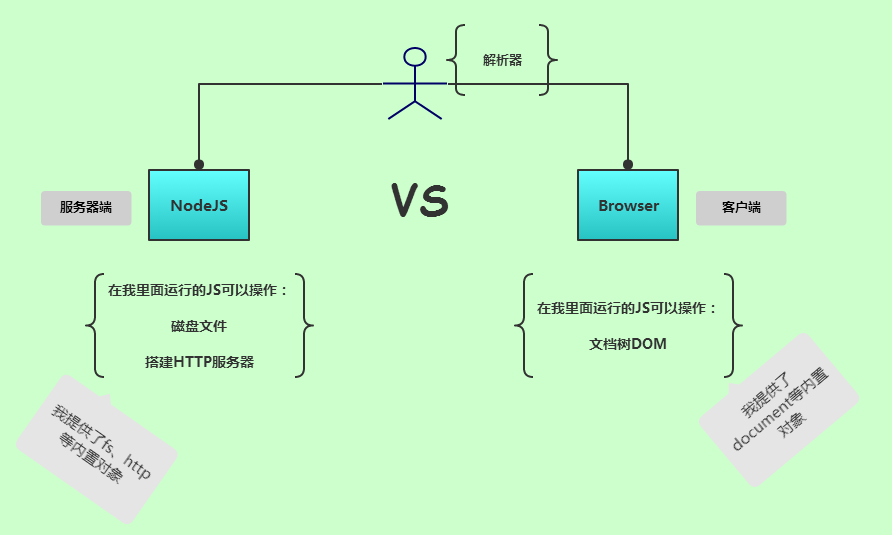
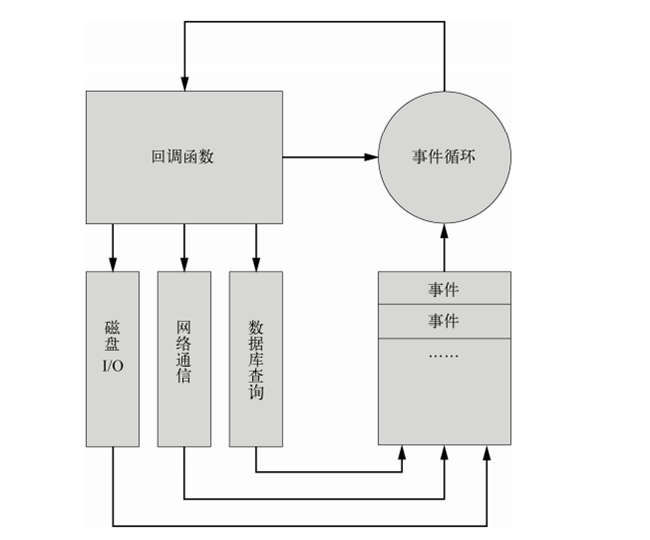

1. NodeJS
NodeJS与浏览器的简单比较

NodeJS?
NodeJS是什么？
NodeJS不是JavaScript框架，也不是JavaScript库。它是一个JavaScript解析器，让JavaScript脱离浏览器而能在服务器端运行。使用了
V8引擎 。V8 JavaScript引擎是Google用于其Chrome浏览器的底层JavaScript引擎（用C++编写的超快解释器），V8引擎可嵌入任何应用程序中，让JavaScript在服务器端运行成为了可能。
如何工作 ？
Node.js采用单线程、异步式I/O 与事件式编程，而不是I/O同步的面向对象编程。
- 异步式
I/O针对所有I/O操作不采用阻塞的策略。当线程遇到I/O操作时，不会以阻塞的方式等待I/O操作的完成或数据的返回，而只是将I/O请求发送给操作系统，继续执行下一条语句。 当操作系统完成I/O操作时，以事件的形式通知执行I/O操作的线程，线程会在特定时候处理这个事件。为了处理异步I/O，线程必须有事件循环，不断地检查有没有未处理的事件，依次予以处理。
在非阻塞模式下，线程不会被
I/O阻塞，一个线程永远在执行计算操作，永远在利用CPU。异步式I/O减少了多线程的开销。NodeJS的这种工作机制形成了高并发的特性。
事件驱动
Node.js的异步机制基于事件。Node.js 在执行的过程中会维护一个事件队 列，程序在执行时进入事件循环等待下一个事件到来，每个异步式I/O请求完成后会被推送 到事件队列，等待程序进程进行处理。所有的磁盘 I/O、网络通信、数据库查询都以非阻塞的方式请求，返回的结果由事件循环来处理。

事件循环的程序入口从第一个事件的回调函数开始。回调函数在处理过程中可能包含的I/O操作也将抛到事件队列中。回调函数执行完毕后再返回事件循环，事件循环会检查事件队列中有没有未处理的事件，直到程序结束。
异步操作

异步操作结果

- 将读入文件的I/O交给OS，继续执行下一个语句
- 执行console.log输出语句
- 文件读入完成，事件响应，执行回调函数。
.....
同步操作

同步操作结果

按顺序执行输出。。。
特性？
JavaScript解析器- 使用
V8引擎 - 单线程、高并发
- 异步
I/O，事件驱动
缺陷？
- 只支持单核
CPU，不能充分的利用多核CPU服务器 - 可靠性低，一旦代码某个环节崩溃，整个web服务都崩溃（原因：单进程，单线程）
- Debug不方便，错误没有
stack trace - 没有日志
- 独占端口
- 需要手动启动
独占端口：
假如整个服务器只有一个网站，或者可以给每个网站分配一个独立的IP地址，不会有 端口冲突的问题。而很多时候为了充分利用服务器的资源，我们会在同一个服务器上 建立多个网站，而且这些网站可能有的是PHP，有的是Rails，有的是Node.js。不能每 个进程都独占80端口，所以我们有必要通过反向代理来实现基于域名的端口共享。
Web服务没有日志：
Express框架中提供日志功能的解决方案。
调试不方便：
可使用eclipse来调试NodeJS程序 或使用 node-inspector 调试 Node.js
共享端口：
从0.6 版本开始，Node.js 提供了一个核心模块：cluster。cluster的功能是生成与当 前进程相同的子进程，并且允许父进程和子进程之间共享端口。Node.js的另一个核心模块 child_process 也提供了相似的进程生成功能，但最大的区别在于cluster 允许跨进程端 口复用，给我们的网络服务器开发带来了很大的方便。
共享 80 端口：
虚拟主机，就是让多个网站共享使用同一服务器同一IP地址，通过域名的不同来划分请 求。主流的HTTP服务器都提供了虚拟主机支持，如Nginx、Apache、IIS等。
使用场景？
1) 适用场景
JSON APIs——构建一个Rest/JSON API服务，Node.js可以充分发挥其非阻塞IO模型以及JavaScript对JSON的功能支持- 单页面、多Ajax请求应用——如Gmail，前端有大量的异步请求，需要服务后端有极高的响应速度
- 命令行工具（bower 、grunt等）
- 流式数据——实时文件上传系统
- 准实时应用系统——如聊天系统、微博系统
2) 不适用场景
- CPU使用率较重、IO使用率较轻的应用——如视频编码、人工智能等，Node.js的优势无法发挥
- 简单Web应用——此类应用的特点是，流量低、物理架构简单
- 计算密集型的程序
- 逻辑十分复杂的事务（因为异步编程)）
NodeJS 核心模块
文件操作
NodeJS提供了基本的文件操作API 同时提供部分同步和异步操作的API
- Buffer（提供对二进制数据的操作）
- Stream（数据流）
- File System（文件系统）
- Path（内置模块来简化路径相关操作）
网络操作
- HTTP
- HTTPS
- URL
- Query String（URL参数字符串与参数对象的互相转换）
- Zlib
- Net（可用于创建Socket服务器或Socket客户端）
进程管理
- Process（全局变量）
- Child Process（创建和控制子进程）
- Cluster（对Child Process模块的封装）